The MAG Bikeways map shows existing, locally-designated bicycle facilities, and is provided to you by the Maricopa Association of Governments (MAG). This map has been produced under the direction of the MAG Regional Bicycle Task Force. Funding was provided by the Federal Highway Administration. If you have any comments, please call MAG at (602) 254-6300 or visit our web site at www.azmag.gov.
Disclaimer:This map is intended to aid bicyclists in choosing routes
between locations. This map is not in any way a warranty or guarantee as
to the stability of roadway conditions or the fitness of listed routes
for bicycling. Many of the routes identified on this map cross or run along
public roads which are exposed to wear and tear and degradation due to
weather, traffic, and other environmental concerns. Riders should remain
alert as routes may contain pavement rutting, cracks, bumps, expansion
joints, natural or other debris on pavement surfaces, and vegetation which
may encroach on routes or portions thereof. Riders should also remain alert
for areas of visual impairment and other irregularities that may impact
rider and motorist ability to see each other or potential road hazards.
The chance that one may come into an area of visual impairment or a route
irregularity warrants special care on the part of route users.
Government resources limit the capacity to address conditions and irregularities
like those described above. Accordingly, route users should maintain a
vigilant lookout for these conditions and irregularities. Route users should
always ride with care for their own safety and that of other users. MAG
does not assume liability for bicyclists traveling upon routes
shown in this map. Safe route selection includes consideration of motor
vehicle, bicycle and pedestrian traffic and roadway or route conditions.
| Wear a Helmet A bike helmet must fit well and be properly adjusted to do its job of protecting your head. It should fit snugly with the chin strap fastened. When purchasing a helmet, make sure it is approved by the American National Standards Institute (ANSI) or the Snell Institute. Helmets should be replaced after the impact of an accident or even after. several years of wear and tear. |
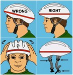 |
| Bike Route Sign May be used to denote multi-use paths, wide outside curb lanes and bicycle routes. |
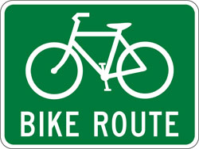 |
| Bicycle Share the Road Sign May be used to denote routes without designated bicycle lanes. |
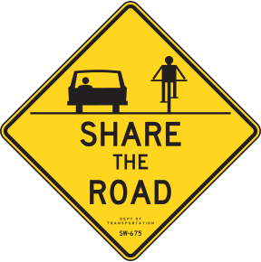 |
| 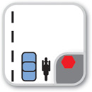 | Obey Traffic Signals and Signs |
| 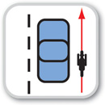 | Ride on the Right |
| 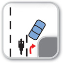 | Use Appropriate Lane |
| 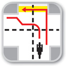 | Turning Left -Two Options |
| 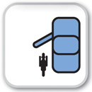 | Beware of Car Doors |
| 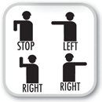 | Use Hand Signals |
| 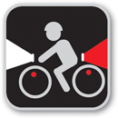 | Use Lights at Night |
| 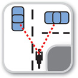 | Make Eye Contact |
| 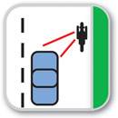 | Scan the Road Behind |
| 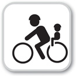 | One Person Per Bike |
| 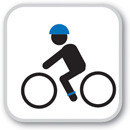 | Helmet your Head |
| 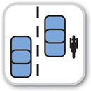 | Be Courteous |
| 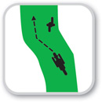 | Keep to the Right |
| 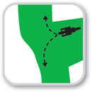 | Merge Correctly |
| 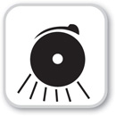 | Signal to Others |
| 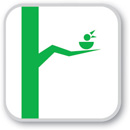 | Respect Nature |
| 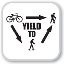 | Right-of-Way |
| 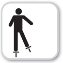 | Where to Skate |
Control Your Pet |
|
| 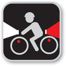 | Be Visible |
Earphone Dangers |
|
| 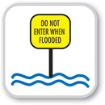 | Flooded Paths |